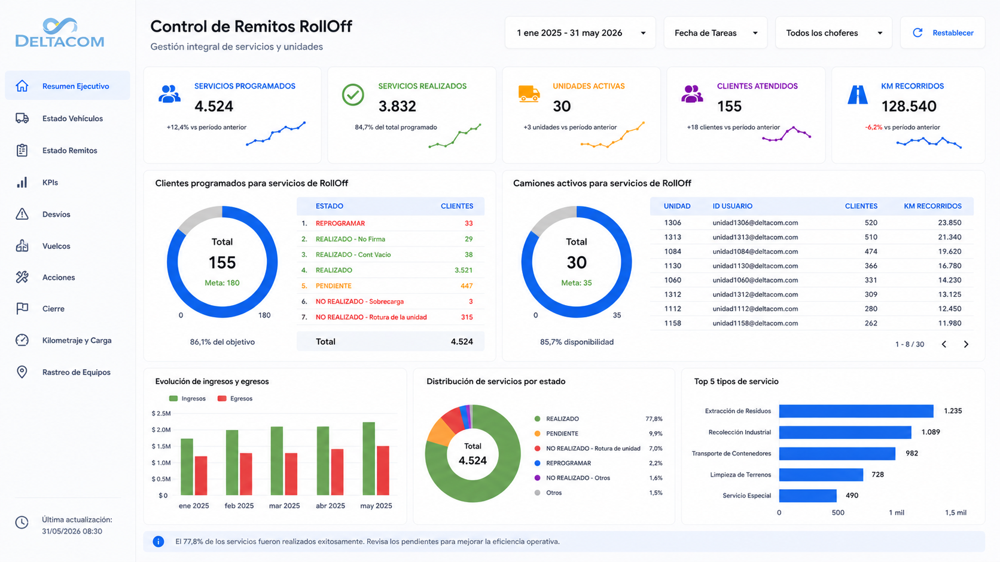
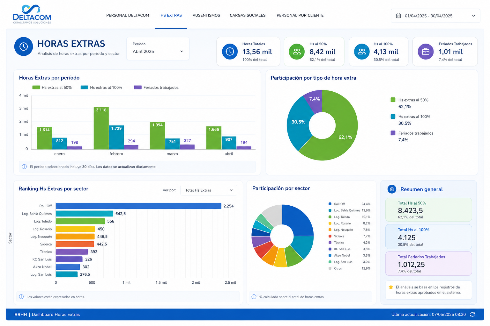
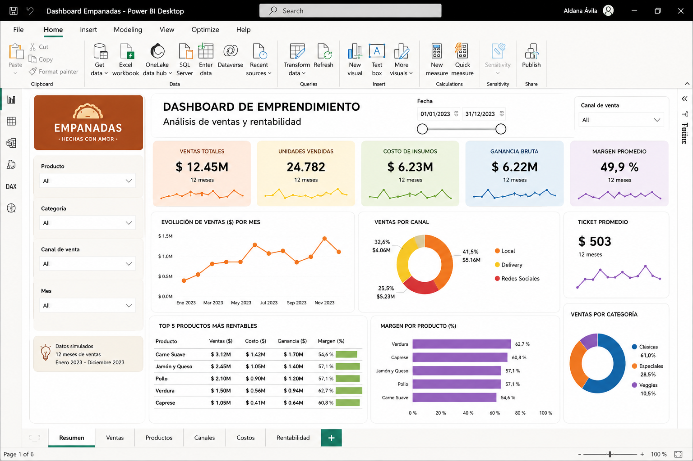
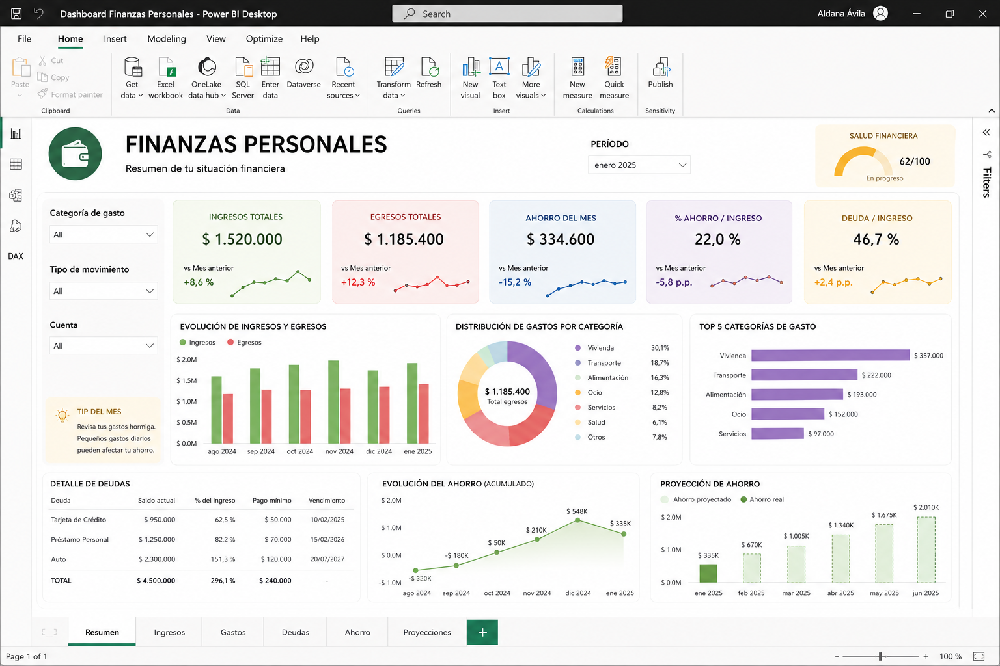

Data Analyst · Business Intelligence · Power BI · Looker Studio.SQL
Transformo datos en decisiones. Analista en actividad con experiencia real en KPIs operativos, dashboards y automatización de reportes.
Soy Analista de Datos, Logística y RRHH en DELTACOM SA, donde desarrollo dashboards, automatizo reportes y genero KPIs operativos para la toma de decisiones gerencial. Estudio Desarrollo de Software en UADE.
Mi experiencia abarca análisis de costos, gestión de datos en TMS, visualizaciones en Excel y Power BI, y automatización de procesos. Tengo background administrativo y contable que me da una visión de negocio integral.
Me interesa especialmente el análisis de negocio, la mejora de procesos y convertir datos crudos en insights que impacten resultados reales.
Herramientas y lenguajes con los que construyo soluciones de datos.
Dashboards, análisis y modelos construidos sobre casos de negocio reales.




De los fundamentos técnicos a proyectos aplicados de negocio real.
Estoy disponible para oportunidades en datos, BI o analítica. No dudes en escribirme.